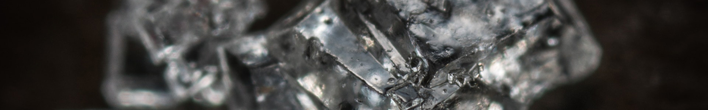

Crystal healing is a type of alternative therapy that involves using gemstones to bring balance to an individual's life and mind. Crystals are said to have a stable and unchanging energy pattern, each with a unique frequency and energy field, or resonance that gives them special properties. As a result, they act like tuning forks, helping bring harmony to the "very unstable energy field of the human body.
In the world of alternative medicine, crystals are said to have healing properties that–when holding them or placing them on your body–can promote physical, emotional and spiritual healing. Crystals are used to interact with your body’s energy field, also known as an individual’s chakra.
In the world of alternative medicine, crystals are said to have healing properties that–when holding them or placing them on your body–can promote physical, emotional and spiritual healing. Crystals are used to interact with your body’s energy field, also known as an individual’s chakra.
For instance, salicylic acid is found in the plant meadowsweet and is used to make aspirin. Aspirin can cause the lining of the stomach to bleed, but meadowsweet naturally contains other compounds that prevent irritation from salicylic acid.
According to herbal medicine practitioners, the effect of the whole plant is greater than its parts. Critics argue that the nature of herbal medicine makes it difficult to give a measured dose of an active ingredient.
The proposed healing benefits of crystals predominantly surround areas of mental wellbeing; including feelings of increased tranquility, positivity and focus, as well as enhanced immunity and pain relief.
Individual crystals are also known to have their own special energies that align to different areas of your life, with their shape and colour - as well as their type - affecting their influence.

Clear Quartz is possibly the most versatile, multipurpose and powerful healing stone available, due to is unique helical spiral crystalline form. It is a master healer that can be used for any and all conditions. It stimulates the immune system, reinstates bodily balance and restores and amplifies energy systems...

Rhodonite is a stone of compassion, an emotional balancer that clears away emotional wounds and scars from the past, and that nurtures love. It stimulates, clears and activates the heart. Rhodonite grounds energy, balances yin-yang, and aids in achieving one's highest potential. It heals emotional shock and panic...

Tiger's Eye is a crystal with beautiful bands of yellow-golden color throughout. This is a powerful stone that helps you to release fear and anxiety and aids harmony and balance. It stimulates taking action, and helps you to make decisions with discernment and understanding, and unclouded by your emotions...
Amethyst has healing powers to help with physical ailments, emotional issues, and in Energy Healing and Chakra balancing. Amethyst crystal therapies are primarily associated with physical ailments of the nervous system, the curing of nightmares and insomnia, and balancing the crown chakra...
Citrine promotes motivation, activates creativity and encourages self-expression. Enhances concentration and revitalises the mind. It releases negative traits, depression, fears and phobias. Emotionally balancing...

Rose Quartz is the stone of universal love. It restores trust and harmony in relationships, encouraging unconditional love. Rose Quartz purifies and opens the heart at all levels to promote love, self-love, friendship, deep inner healing and feelings of peace...

A protective stone, Jade keeps the wearer from harm and brings harmony. Jade attracts good luck and friendship. It stabilises the personality and promotes self-sufficiency. Soothes the mind, releasing negative thoughts...

Jasper is known as the “supreme nurturer”. It sustains and supports through times of stress, and brings tranquility and wholeness. Jasper provides protection and absorbs negative energy. It balances yin and yang...

Malachite absorbs negative energies and pollutants, picking them up from the atmosphere and from the body. Guards against radiation and clears electromagnetic pollution. Malachite clears and activates the chakras and attunes to spiritual guidance. It opens the heart to unconditional love...
A stone for “new beginnings”, Moonstone is a stone of inner growth and strength. It soothes emotional instability and stress, and stabilises the emotions, providing calmness. Moonstone enhances intuition, promotes inspiration, success and good fortune in love and business matters...
Black Obsidian is a powerful cleanser of psychic smog created within your aura, and is a strong psychic protection stone. This stone has powerful metaphysical properties that will help to shield you against negativity. The energy of these stones may stimulate the gift of prophesy...

Pyrite is a powerful protection stone which shields and protects against all forms of negative vibrations and/or energy, working on the physical, etheric, and emotional levels. It stimulates the intellect and enhances memory, helping to recall relevant information when needed...
Along with transformation, Moldavite carries properties assisting in protection, self-healing, and even cleansing. Some stones are known to assist with Moldavites energies in a number of ways. Using a Herkimer Diamond while working with Moldavite will assist and enhance third eye visionary experience...

Known as the "wisdom stone", each colour of Sapphire brings its own particular wisdom. It releases mental tension, depression, unwanted thoughts and spiritual confusion. Sapphire restores balance within the body, aligning the physical, mental and spiritual planes, bringing serenity and peace of mind...
The bloodstone has grounding and purifying properties. Because of its ability to ward off negative energy and purify and cleanse the energy around it, the bloodstone is considered very protective. It can strengthen the immune system, help invigorate the blood, and energize one's life...

Ruby stone has a vibration that radiates with an intensity that projects energy and enthusiasm for life. It encourages leadership and increased concentration, with sharpness of intellect. This beautiful red gemstone allows you to see your own strength, and your creative potential from a heart based perspective...
Clear Quartz is also known as crystal quartz and is a mineral made of oxygen and silicone atoms. It is part of the trigonal crystal system and has a vitreous luster. As the meaning of the name suggests, Clear Quartz is transparent and clear to white colored. It also goes by the name Rock Crystal. The meaning of Clear Quartz is healing and spiritual growth.
While Clear Quartz buzzes in the emotional and spiritual space, it also brings a whole host of health benefits to those craving some physical healing. The clear-eyed stone is a marvel when it comes to stimulating the immune system, kickstarting your metabolism and even helping in matters of weight loss. With its water-like clarity, it is highly effective when it comes to ridding the body of toxins too.
A shield against negative energy and infused with potent positive vibes, the Clear Quartz stone is a sublime emotional aid for all those seeking a long-term pick me up. This icy bright and luminous stone gets to work on the soul, kicking out the energy that is dragging you down and infusing you with a new sense of purpose and play. It stimulates brighter feelings and takes even the tiniest hint of joy and turns it into something larger than life if you are willing to let it. As mentioned, this stone is a master of energy – it knows exactly what to do with all that excess energy running around and where to channel it to bring out the best results.
Clear Quartz is all about spiritual growth, it loves enticing you to look deep. It’s a crystal that connects with all the chakras, clearing out blockages, spring cleaning your aura and inviting energy to flow. Part of the Clear Quartz meaning is that it especially likes to stimulate the crown chakra. This is the chakra for those that are ready to connect with higher plains and to leap into the infinite possibilities offered by the universe.
Rhodonite is manganese silicate mineral with an opaque transparency. Rhodonite comes in shades that vary from pale pink to deep red. It has a vitreous luster and is composed of other minerals such as calcite, iron, and magnesium. It has a triclinic crystal system and occurs in ores or as rounded crystals. Rhodonite means compassion and love.
While much of Rhodonites power is attributed to its beautiful emotional and spiritual properties, that doesn’t mean it falls short when it comes to bringing a breath of fresh healing air to your body too. The Rhodonite crystal is softly invigorating and gifts you a strength you never knew you had.
For those who feel their energy is drained (particularly after a strong emotional spell or after a bout of trauma) then Rhodonite’s soothing vibrations are enough to bring you back to life. Of course, it connects with the heart and circulatory system, keeping your ticker beating bright. The rose stone also sends energy to the endocrine system along with curing stomach ulcers, aiding digestion and helping with autoimmune diseases. It also helps the body heal from scarring and can take the sting out of insect bites.
Healing emotional wounds and putting you on the pathway to complete unconditional love – when it comes to mental and emotional wellbeing this is where Rhodonite shines. For those who want to clear their heart of pain and bring down the barriers that may be holding them back, Rhodonite is ready to go to work on helping you dismantle anything that could be having a negative impact on your self-worth.
All love starts with self-love and the more we are able to stand in the light of our own self-confidence and our own talents, the better equipped we can be to turn that love outwards and send it spiraling into the universe. If you have issues with abandonment or betrayal or anything that translates to unhealthy attitudes towards relationships, Rhodonite can be an amazing relationship counsellor to get your love life back on track. It’s a stone that encourages mutual understanding and the ability to embrace compromise from a place of pure and honest acceptance.
As mentioned, Rhodonite has a huge connection to the heart chakra. The heart chakra is where our love, trust, and ability to bring compassion comes from. As life can be brimming with hard knocks, it's our heart chakra that can often take the hit. We throw up walls, we shut down, and our trust levels diminish. When we work to clear the blockages that clog up the heart space, we may find ourselves healed and in harmony and able to bring about healthy levels of love both internally and externally.
Those Rhodonite crystals that come swirled with plenty of darker patches also resonate strongly with the root chakra. This is our place of safety, its how we root into the earth beneath our feet and it all relates to our sense of security in the world.
It goes without saying that as a stone of deep love, Rhodonite comes with more than a pinch of positivity. It brings joy and energy and a spark that can light up a room. If you feel like you need some added power in reducing the negative energy in your life then you can also pair Rhodonite with Sugilite for even more intense action.
Tigers Eye is a member of the Chalcedony mineral class family. It has a silky luster and an opaque transparency. Tiger’s Eye is commonly a metamorphic rock that comes in shades of reddish brown with iron stripes. The meaning of Tigers Eye is self-confidence and inner strength.
Brimming with vitality and ever ready to pull someone out of a slump, Tiger’s Eye is an amazing fortifier of the blood and exceptional at balancing out the endocrine system. For those who tend to feel a little sluggish or soaked in lethargy, the Tiger Eye stone can use its fiery golden-brown chi to stir the pot and awaken motivation. Higher energy, a speedier metabolism, and a softer sex-drive all help the hormones to fall into alignment, effectively bringing personal biochemistry back to the best level. For those who suffer from seasonal depression, the warm-blooded stone also holds the heat of the sun, helping to alleviate the weight of dark and dreary days.
Wash away negative energy, dig deep into the root chakra, and let self-confidence soar with the Tiger Eye crystal. This stone comes with plenty of emotional healing properties and helps the wearer to stay strong, centered and connected to their core regardless of the chaos that surrounds them. When feeling blocked, the energy of Tiger’s Eye can also cut straight through that lack of motivation and help shift focus by encouraging a more active approach to life.
By building that safe and strong foundation, directing energy in the right way, and soaking up the radiant sunny warmth of the stone, those who make space for the Tiger’s Eye in their life may find that new confidence carries them over and helps them to drive for success. As part of the healing powers, toxic energies are washed away, mental roadblocks pushed aside, and deepest dreams suddenly stop being visions and become well and truly in targeted reach.
Tiger Eye can help to heal plenty of various relationships. Not only can it aid in positively overcoming low confidence to strengthen relationships with the self, but it can lend a hand when it comes to tricky emotional ties to finances and money. For those who struggle with self-worth and who roll up money woes in that, Tiger’s Eye works to unravel these limiting beliefs and to clear away toxic energy around the things in life that often serve to keeping people feeling secure.
For those who need some help with their lower chakras, the Tiger’s Eye makes for a comforting companion. The root chakra, the solar plexus chakra, and the sacral chakra all work in harmony with this earthly stone. These are the safety and strength chakras, where people feel grounded, connected to the earth beneath their feet, and stable enough in this world to leap higher and explore deeper levels of spiritual consciousness. Without a solid foundation for these chakras, it can be tricky to feel confident and comfortable as they actively contribute to keeping people tethered.
These stones are incredible amplifier’s which means they are also known for tapping into and enhancing physic abilities. For those who want to connect deeper to their third eye, using the gemstone as a spiritual amplifier to higher realms could benefit the aura, although it’s worth remembering that the Tiger Eye is more an earthly root chakra stone.
Amethyst is a purple variety of quartz. It is part of the hexagonal crystal system. Amethyst is a semiprecious stone with a vitreous or glassy luster. It often comes in shades of violet and purple. The meaning of Amethyst is spiritual healing, calmness, and wisdom.
On a physical level, Amethyst also associated with healthy cell regeneration, encouraging soothing sleep and rest, and promoting hormonal balance. As Amethyst helps balance metabolism and positively serves the endocrine system, the body finds its inner harmony and doesn’t go too crazy on the cortisol production – which dramatically cuts down on stress and tension. Along with all of this, the purplish hue of Amethyst also ensures that the body, mind and soul remain cleansed and detoxified. For those who struggle with a foggy head or migraines, then Amethyst can also help clear those clouds away.
For those who struggle to cut down on their drinking, Amethyst encourages the wearer to keep a sober mind. It’s a stone that serves as a reminder that luminous thoughts and a level head are needed for making the right choices in life and that by muddying the mind, it can be tricky to see the path that makes the most sense.
A beautiful purple boost to the immune system; the Amethyst gemstone is also known for its staggering ability to help the body become fighting fit and to fend off ailments and diseases that wreak havoc on a person’s health and wellbeing. By lending a purifying nature to the blood and effectively reducing stress and anxiety levels, the immune system takes a boost meaning everything from the respiratory system to the skin can find higher levels of power to heal.
Finally, for those who suffer the physical challenge of falling into a delicious dark and restful slumber, having Amethyst close by during the wind-down hours of sleep can also ensure that the wearer doesn’t stay up all night. A stone known for aiding the struggle of insomnia, Amethyst amazes with its ability to bring plentiful rest and power.
At a base level, Amethyst is renowned for bringing a sense of calm and clarity to our chaotic world. Those who keep Amethyst close will find that they feel comforted, grounded and soothed in a truly uplifting way. Because Amethyst centers the emotions, it can be a beautiful aide in recovery for those suffering from the overwhelming emotions that come with grief, loss and all shades of sadness. Thanks to its divine spirituality, it’s a great stone for reminding people not to fear the unknown.
Death could be considered a transition, a change, and a leap to a higher realm and while of course there is grief in letting go of someone who is loved, there is also life to be celebrated and memories to be most cherished. Amethyst reminds us that in spirituality, there is also balance – it isn’t all about bypassing the negative and thinking that spiritual awakening leads to only positive thinking, but also recognizing the darkness and honoring it without holding it forever in the heart.
It also works wonderfully for those who tend to be quick to anger as it effectively dissipates the growth of rage and replaces it with a halo of serenity that can be hard to cut through.
While Amethyst works to sweep negativity away from clouding the mind, it also seems to trigger a spark that unveils our deepest wells of inspiration. When our mind is calm and focused we are able to tap into our creative mind and unveil all those ideas and interests that were stashed behind the wall of inner chaos.
Nurturing meditation, encouraging restful sleep, clearing away the cobwebs, and helping us to divine our deeper paths through life, Amethyst promotes deep transformation in our lives. When we make space within for peaceful courage, we are able to follow the map of our own making and to pursue the things that will serve us.
For those who struggle with the art of decision making, Amethyst can also help to harness the inner power needed to make choices that work for the individual. Life throws up all kinds of challenges and this can sometimes leave people in a state of freeze, unsure of which way to turn. Amethyst gently reminds the wearer that all is not lost and they have the inner sight, knowledge and wisdom they need to pick a path to walk down.
For those who tend to be a little hot-headed in arguments, Amethyst can also help to bring the wearer back down to a calm and collected state of mind. It’s a great stone for aiding in family and relationship dynamics as it supports a level head and comes from a place of love.
For those who are looking to leap higher into their spiritual awakening, Amethyst is one of the most important stones in the healing pack. It is strongly associated with the crown chakra and is even said to bridge the gap between the physical and the spiritual realms.
The third eye chakra is known for being one of the most powerful intuitive tools to have in the pack. Everyone has the gift of intuition, it's all about how they harness it. As Amethyst kindles the third eye to awaken, it grants the sixth sense to bloom into being. In eastern philosophy, it is said that the third eye is the spiritual center of a person’s existence. It's also responsible for how people perceive reality and how open they are to opening the door and stepping out into spiritual enlightenment. The color associated with the third eye chakra is indigo which also links to the color of Amethyst. When the third eye chakra is blocked, people may struggle with feelings of depression and anxiety, and maybe feel the weight of cynicism heavy on their soul. By awakening the third eye, one can awaken intuition, let their inner wisdom flow, and invite the sparkle back to their imagination.
The crown chakra is the sacred energy center and also intricately connected with the Amethyst stone. Its where the cosmic consciousness sits and is where people receive those much-needed messages from the universe and the connection to the cosmos. When the crown chakras power is untapped or there is a block, people may feel alienated or disconnected from the world around them. They may feel their ego gets in the way too much. When the crown chakra is open and ready to receive, there is balance, wellbeing, deeper connection and a working confidence in one own’s wisdom.
With a long history as an amulet for protection it’s no surprise that Amethyst works to counteract the negative energies of external environments. Amethyst can ward of physical attacks; lending protection against misfortune. On a spiritual level it also helps protect the mind against black magic and emotional manipulation.
Citrine is in the mineral class of quartz. It takes its color from the traces of iron in the quartz and can be anything from pale yellow to bright shades of amber. Citrine tends to have a hexagonal crystal system and in its natural form has a cloudy or smoky look. The meaning of citrine is focused on prosperity, joy, and energy.
Just like standing in the gentle glow of sunlight, Citrine works wonders when it comes to warming the physical body and bringing uplifting moods. If Vitamin D were a stone it would be Citrine for sure. Bringing Citrine into your life means that you can say farewell to sluggish vibes. An instant pick me up, Citrine brings a bounty of energy and can be an amazing gift to those who suffer from chronic fatigue or other conditions that run your personal resources low.
While Citrine is an energy giver, it doesn’t mean she amps you up into overdrive, it’s a stone that will pull you up by your bootstraps but not leave you out of balance. Citrine helps to keep the thyroid working well, stimulate a healthy digestive system, better blood circulation, and keeps allergies and all kinds of skin irritations on the down-low. Those who suffer from menstrual pain and a cycle that seems out of whack will also love the healing vibes of Citrine and it can also be used as a remedy against nausea too.
It comes as no surprise that the bright and sunny mood of Citrine is all centered around good vibrations, excitations, and not letting go of that personal power. If you ever feel like you have lost your grip, Citrine is here to remind you to simply take it back with a smile. It helps you to crack open your mind, to release those tense feelings of negativity and anger, and to take deep cleansing breaths that help you to overcome muddled feelings of confusion, depression, and destructive tendencies. Citrine teaches you to put down the weight of all those things that no longer make you feel soaked in sunlight inside. Citrine can help you to fight phobias through the gentle flow of healing energy and knowing that no matter what, you are able to take accountability for your own safety and that you simply will not fail.
When you feel the flow of sweet optimism, this helps you to tap into those powers of manifestation. With Citrine on your side, you suddenly feel like anything is possible – and it is! You will feel your sense of self-worth suddenly rocket sky-high, you will allow yourself to drift with the rivers flow rather than feeling like life is one big upstream battle, and you will stay steady on your feet and even be ready and willing to accept criticism with softness and grace.
There’s a glow of creative energy that comes from Citrine too, making it an amazing gemstone for those who truly feel the need to kickstart their creative heart. It invites a sense of style and flexibility and when you are moving along with this positive mindset, you are suddenly able to attract things of great pleasure back into your life. Good friends, healthy relationships, and magical mentors – all the good folk are drawn to be close to those who wear this vibrant and sunny stone.
Citrine is connected to the Solar Plexus Chakra and the Sacral Chakra, and both these power points in the body sit either in the center or down low. These are elemental chakras that help us to stay grounded and glorious in our own power. The Solar Plexus Chakra is where we garner our warrior strength and stand strong in personal power. If your Solar Plexus Chakra is blocked you may struggle to feel centered and your confidence will sit on shaky ground. This makes it hard to forge boundaries and also may mean that you struggle to keep negative energy out.
The Sacral Chakra is where our passion, creativity and intimacy sits close to our pubic bone. This is also where the well of our joy sits. If your Sacral Chakra is blocked you may feel overwhelmed like you are spinning in a loss of control, and this can lead to feelings of detachment or emotionally checking out.
As Citrine works to bring both these chakras into alignment, you can see it’s a really great tool for those who just need a little extra help staying grounded without feeling ground down. Ward off negative energy, bring your inner strength shimmering to the surface and let the hardships of life roll off like water on a duck's back with this purely positive stone.
Rose Quartz is a pink form of quartz. It is also known as Hyaline Quartz. It has a pale pink coloring and a translucent transparency and a vitreous luster. It also has a hexagonal crystal system and is in the mineral class of quartz. The meaning of Rose Quartz is love and compassion.
Along with working wonders when it comes to soulful healing, Rose Quartz boasts beautiful healing properties for the body too. In keeping with its theme of being a heart healer, Rose Quartz can help to prevent thrombosis and heart attacks, improve the circulatory system, and ensure that your heart muscles are as smooth and strong as possible.
There’s a long history of mothers to be turning to the potent power of Rose Quartz throughout their pregnancy. Rose Quartz is said to help protect the mother and unborn child from problems within pregnancy thanks to its deep feminine energy. For new mothers, Rose Quartz is a kindly stone to have close by as it is said to help curate unbreakable bonds and lets the love energy flow like a fountain.
The other name for which Rose Quartz is known is as The Heart Stone. As mentioned, Rose Quartz is intricately connected to the heart chakra, and this crystal is often used in helping the heart heal from the pain or trauma left from deep emotional wounds. Rose Quartz is also used as a calling card for those who crave more love in their lives. This doesn’t always need to take the form of romantic love, but more in finding a deep sense of compassion and care in this world – especially if it comes from one of the most important sources who can bring it – oneself.
If your heart chakra feels blocked you may experience the signs of unhealthy behavior when it comes to relationships. Maybe you will lean more towards co-dependence, be quick to jealousy, have little trust in yourself or others, and often feel unwilling or unworthy enough to give yourself to the grace of love. One of the most stunning Rose Quartz healing properties is its ability to crack open the heart and put you back in alignment so you feel connected, comforted, and open to all the possibilities that a joyous life can bring.
Another beautiful benefit of Rose Quartz is her deep vibration and attunement with the goddess energy. Rose Quartz is connected with the feminine divine, meaning that it carries the aura of compassion and peace and the warmth of mothering – all with the superior strength of spirit. If you feel you need to learn how to self soothe, to be healed by your own hands, and to uplift your own potential into the goddess sphere, then Rose Quartz is a path that will take you there.
Jade is a silicate mineral often synonymous with East Asian art. It is part of the Jadeite class of mineral and is part of the monoclinic crystal system. Jade is most well known for its different shades of green but it also comes in red, white, brown, lavender, purple, and orange. Jade's meaning is confidence, acceptance, and health.
Jade may be an emotional and spiritual player, but it also knows how to help the body to heal too. Jade is a powerful and hugely potent cleansing stone meaning it can go straight to work helping organs to heal from toxins. It is known to help the kidneys, the bladder, the spleen, and to balance out fluid systems in the body. Along with all of that, Jade is also popular for helping people to fight infections, its cooling touch helps to bring down fevers, and it is commonly used to encourage the body to effectively heal itself. For those who are facing sexual problems, Jade can also be something of a libido stirrer.
Jade is hugely intuitive when it comes to dealing with mental and emotional wellbeing. This stone nudges out negative thought patterns, gifts you the courage and wisdom to welcome your own sage advice and is all about upping self-sufficiency so you feel allowed and proud to stand on your own two feet. Self-sufficiency is hugely important when it comes to raising self-esteem, moving through the world with a wonderful sense of confidence, and keeping your soul nourished. Jade is intrinsically linked to ideas of purity, and this doesn’t mean living without a shadow side, but being clear of mind and calm of heart to embrace every angle of yourself. Jade wants to soak you in self-love and ease you into familiar patterns of acceptance that are sure to stay.
Strong in spiritual vibes, Jade is hugely connected to the heart chakra. For those ready to flush out negative energy and get into harmony with the wider world, you will adore those soft shimmering moods that Jade brings with it. The heart chakra is where our trust, love, and compassion sits. The heart goes beyond romantic love, connecting us to how we deal with the world and all those that reside in it. The heart chakra helps us to map out beautiful friendships, curate loving family ties, and even to connect with our own sense of self-love.
Red Jasper is a member of the Chalcedony mineral class. It is an opaque version of quartz with a vitreous luster and opaque transparency. Jasper also comes in shades of green, yellow, black, orange, yellow, blue, and brown. Red Jasper has a deep red coloring ranging from bright red to brownish red. The meaning of Red Jasper is grounding, passion, and protection.
Red Jasper is a highly protective stone known for guarding against all kinds of threats. This was why it was such a popular crystal for warriors or those on the battlefields. Not only does it ward off danger, not to mention electromagnetic smog and pollution, but it is known for keeping the blood circulatory system strong and the body in a constant state of detox.
Whether you tend to be shy when it comes to sexual encounters or even overaggressive – Red Jasper can be used across the board to help heal sexual issues in couples and individuals. It enhances the power of tantra, it promotes sexual interest and compatibility with your partner, and it stirs up individual stimulation leading to creative courage, a fiery passion, and a healthy attitude towards sex.
Also known as The Endurance Stone, Red Jasper invites you to keep your focus and strength regardless of whatever task you are doing, especially during times of stress. For those who feel as though their mind and energy can flit out of focus, Red Jasper can bring you back. It is an exceptional tool for using as part of your meditation practice as alongside inviting endurance in difficult situations it has strong spiritual properties too.
If you are crawling out of a chaotic time in your life, Red Jasper can be used as part of the divine healing process. It’s a stone that is deeply connected to the roots, meaning that it tethers you to the earth beneath your feet, giving you the strength to stand strong as you renew and revitalize your soul. If there was ever a time to feel a new lease of life, Red Jasper works as the calendar turn.
If you feel like you go through life a little on the numb side, struggling to spark creativity and stoke your inner fire of self-confidence, then Red Jasper can help to raise your personal passion levels. Passion applies to everything, not just what goes on between the sheets. We need passion to live fulfilling lives; whether this is passion and zest for personal relationships, for the work we do, the travels we take, or the ways we choose to spend our time. Red Jasper can reignite the spark in your life and gift you emotional stability.
Red Jasper is connected to the base chakras which is why it holds such strong protective properties. It helps us to feel grounded in this world and has an uncanny ability to stir up our life force by shaking stagnant energy out from all of our energy points – from the Sacral Chakra to the Heart Chakra. Along with boosting our life force energy, Red Jasper is also known for rousing your kundalini serpent. The kundalini serpent speaks to the energy that sits at the base of our spine. When roused from slumber, this energy can cause spirals up through our body and lead to deep spiritual awakenings.
If you find it tough to stand your ground or face up to things that take courage and power, then Red Jasper can gift you that fire in your belly. This is a stone that brings to light your inner power which is why it’s such a good choice for those with challenges to face.
Malachite is a green copper carbonate mineral. It is part of the monolithic crystal system and has a silky luster. Malachite is often used as an ore of copper. It has an opaque transparency and sometimes has a patterned surface. Malachite is a rich shade of green and its meaning is transformation and positive change.
A favored tool of alchemists and healers back in the day, Malachite has proven its worth over centuries when it comes to imparting wisdom on the body. It’s a stone known to keep blood pressure on the down low and its calming nature certainly helps this. Malachite also works in harmony with the bones, encouraging quick healing for broken bones, torn muscles, and problems with the joints.
Thanks to its strong feminine energy, Malachite is also a stone that lends a hand to period problems like menstrual cramps and making the body flow in better harmony when it comes to labor pains. It has earnt its other name as the Midwife Stone.
Malachite is an amazing stone at helping diminish fears, not just in an emotional way but also in helping the body deal with the pounding heart and sweats that can accompany resistance to change and phobias. This is perhaps how Malachite also earnt its reputation as being a talisman for travelers, particularly those who fear to step on airplanes or who suffer from travel sickness.
When it comes to emotional healing this is where Malachite amps up its powers. One of the strongest elements that flows from Malachite is its immense powers of protection. Malachite is all about flushing out toxic emotions, clearing away unwanted energies, and ensuring that those negative vibes stay 6 feet away at all times. It gives you courage, wisdom, and the ability to spot and say no to all kinds of emotional blackmail. It’s a stone that sends a warning bell when things aren’t as they seem, which in turn grants you the inner strength and confidence you need to know that no matter what, this stone will teach you how to have your own back without the paranoia.
When it’s not busy sweeping the path of poor energy, Malachite is all about giving you the capacity to embrace change. It’s also known as the Stone of Transformation. Malachite gives you a daily dose of courage, invites you to step out of your comfort zone, and serves up a savvy reminder that to move forward in life, there are some things you may need to leave behind. It does this without letting go of empathy or losing balance, but somehow keeps you centered, calm, and able to approach emotional decisions with ease and grace.
Like many of the light and dark green stones, Malachite is predominantly a heart chakra stone. When our heart chakras are blocked we struggle to show the full spectrum of our love and to let others in to share the gorgeous nature of our souls. Malachite goes straight to work on the heart chakra, removing the blocks so that beauty can flow. It doesn’t stop at the heart either, Malachite works across the chakras, strengthening your Solar Plexus Chakra so you are able to feel grounded and brimming with vitality. It’s a chi stirrer of a stone that’s for sure. It also taps into your Third Eye Chakra, where our infinite wisdom and our deepest intuition sit. When our Third Eye is clear to open, it means that we are leaping higher spiritually and that’s when magic can be manifested and psychic visions even have a chance to seep in.
Moonstone is part of the feldspar mineral group. It is made of sodium potassium aluminum silicate and has a pearly opalescent look. Moonstone is translucent and comes in colors of white and grey but also orange, green, blue, pink, brown and rainbow. The meaning of Moonstone is feminine energy and new beginnings.
Being so linked to the Goddess energy and the divine feminine, It’s no surprise that for those people who suffer from PMS, the Moonstone could be your ticket to softer symptoms and better hormonal balance. The Moonstone powerfully affects the reproductive organs and brings your body into its own cycle. For those who are struggling with fertility issues, the Moonstone can also help to bring these issues into healthier fruition. Parents to be will also find strength and power in the Moonstone as it can help to ease all kinds of physical discomforts often associated with pregnancy and childbearing.
If you’ve ever felt like you were losing your mind on a full moon, then this is just a hint as to how much the Moon affects our emotional balance. The Moonstone is here to shine a light through the darkness and to elevate all those feelings. When you take a symbol of the moon and keep it on your person or in your life, it will intuitively link you to the universe and can bring all those wild hormones into check, ensuring that you are moving in flow with the world outside your window. The Moonstone is also known as the stone of new beginnings. Everything passes, everything changes and the Moonstone reminds you how important it is to embrace the cyclical nature of the seasons and not to fear the turning of the page and the potential of new chapters. Rather than sink into overwhelm, the Moonstone helps you to process and accept through the harmony of its natural healing powers.
Cosmic and charming, the Moonstone is rich with psychic abilities and a great connector to the chakras. There is something deeply spiritual about this glimmering stone – just like watching the moonbeams dance of the midnight ocean, it instils us with a sense of wonder and calm. The Moonstone connects beautifully with the Heart Chakra, the Third Eye Chakra and the Crown Chakra, the two chakras that invite us to look deep within so that we can see far beyond the confines of our own periphery. These two chakras when open and attuned help us to find our place in the universe and help us to feel part of this great cosmic jigsaw swirling above our heads.
Obsidian is volcanic glass that forms naturally. It comes from the rapid cooling of felsic lava. Obsidian is naturally black in color and has a glassy texture and a vitreous luster. There are several shades of Obsidian including rainbow, snowflake, gold, and mahogany. Obsidian is hard and brittle and was commonly used for tools. The meaning of Obsidian is safety and grounding.
As a highly protective stone, Obsidian is ever ready to keep your whole body ready for action and this means helping every inch stay detoxed. For a start, Obsidian is excellent when it comes to keeping your circulation in full and healthy flow. Obsidian can also be extremely useful to those who suffer from digestive issues and is amazing for those who have problems with the gall bladder. In fact, the Obsidian Stone simply wants you to thrive to your fullest health. It is a crystal that keeps your heart beating full and loud and healthy, and a crystal that calls into being deep tissue healing so your body can rejuvenate and be fresh, youthful, and full of fire.
Protective and perfectly poised to help you heal deeply, the Obsidian Stone is best known for keeping you in the clear when it comes to negative emotions and negative energy. No matter if your bad juju is coming from you or from external forces, Obsidian will work to throw its cloak of protection over your shoulders, ensuring that no matter what – you aren’t dragged down into a pit of despair. It is a companion stone that truly helps you to feel safe.
While some may shy away from the darker hues of the Obsidian Stone for something that brings brighter hues to the party, it’s important to remember that everything in life is all about balance. Without the night there is no day, without the darkness there is no light. This is where Obsidian swoops in to serve you. It is a truth-seeker stone and rather than encourage you to walk in falsehood, it is more about finding ways to face up to all the different angles of yourself so that you are full and ready and invulnerable when it is finally time to step into that light.
In short, Obsidian gives you all the courage you need to explore the unknown, embrace who you truly are, and to dissolve old traumas and stop holding onto all that which is no longer serving you. When you follow through with the art of letting go and facing up to your deeper self, there is so much room for growth and before you know it- those branches that you may have inadvertently been clipping are ready to reach for the sky.
One of the strongest connections you can expect from your Obsidian Stone is its ability to strengthen your root chakra. This is one of the most important chakras we have as it is known for keeping us grounded no matter what is going on in the world around us. When the root chakra is blocked, we feel untethered and suddenly unstable, as though danger or negativity waits at every turn. With Obsidian sending its healing energy straight where it is needed, you can stand safe and strong and without the risk of any kind of psychic attack.
For centuries sages and healers also turned to the power of Obsidian to help tap into that third eye chakra. They believed the mirror-like qualities of Obsidian could provide a glimpse into another realm and could guide the way towards higher knowledge and cosmic consciousness. The Black Obsidian Stone is also known for helping out when it comes to your solar plexus chakra. This is our third chakra in the body and is best associated with the place where our self-esteem and sense of worth flows from. When the solar plexus is blocked it can send us off balance and make us feel lost, flailing, or even shy in our own skin. Using the Obsidian mirror you can look within and remove the blockage that is keeping you from living out your very best life without the confinements of fear.
Pyrite is an iron sulfide mineral with a metallic luster. It has and a brassy coloring that is similar to gold, because of this resemblance it is also known by the name Fools Gold. It comes from the cubic crystal system and has an opaque transparency and a brittle texture. Pyrite's meaning is purity and unblocks creativity.
When it comes to physical healing, Pyrite is all about building up your strength and stamina. Remember, it’s a healing stone that leans on its masculine energy. Because of its love of protection, Pyrite is an incredible stone for cutting down on environmental pollution and the effects of this on the body. It’s said to be a useful tool in fighting viral infections, reducing fevers, and strengthening the immune system along with the respiratory system. Pyrite is said to improve lung health and can even be useful for those who suffer from asthma and other breath related ailments. It also keeps the blood in healthy flow and can stimulate the endocrine function and help with fertility issues.
When it comes to emotional strengthening this is where Pyrite truly lights a fire in the soul. Once we feel protected from outside elements it's so much easier to feel safe and secure in one's own skin. You will notice confidence levels starting to creep up, you will be able to bring out those natural leadership qualities you could have had stashed away, and you will easily be able to see beyond pretence and to live in the light of authenticity.
Pyrite seems to set the spirit on fire – in a good way! It rekindles any lost drive or distant passion and makes you feel like you are ready to embrace life once again. If you have been tangled up in depressive thoughts or residing in anxiety, Pyrite is here to help you step away from those thoughts and fears, to overcome all that is holding you back, and to take action to live the life you were born for.
Positive energy runs rampant in the Pyrite stone. It’s all about clearing away cobwebs of negative energy and ensuring that you never fall into the darkness but instead feel strong and compelled to step into the light. To help facilitate this inner strength and za zoom for life, Pyrite works on strengthening and clearing out the solar plexus chakra and the sacral chakra. These are the chakras that hold our deep-set passion and energy for life, our sexual prowess, and our perfect love of creative thought and action. When they are blocked we can feel as though our senses are deadened, but when awakened, we suddenly feel like we can soar.
Moldavite is a member of the Tektite group of natural glasses formed from interplanetary collisions. Unlike other Tektites from around the world which are tar black or brownish-black, translucent Moldavite is a deep forest green. Moldavite is good for counteracting cynicism and connects even the most world-weary adult with the wonders of the universe. It eases away doubts, even when the cause is unknown, and calms worries about money by providing solutions not previously considered.
Moldavite is useful as a tool for diagnosis, illuminating the cause and source of an imbalance or disease, and then supports the releasing and healing process. Its high vibrational energy helps re-establish the blocked areas, encouraging the cells to return to their original state of perfection.
A rejuvenating stone, Moldavite stimulates personal fulfillment and slows down the aging process. It aids in memory retention and protects against mental degeneration. It may help balance disturbances in the electrical impulses of the brain, and is supportive for hard to treat progressive illnesses.
It is an excellent stimulant for treating gout, and like many green stones is good for the eyes. It may be beneficial in treating asthma and other diseases of the respiratory tract, allergies or rashes caused by modern chemicals or pollution, and assisting the body in overcoming flu and anemia.
Moldavite is a stone of the heart, reaching into the deepest inner self and bringing to the surface that which one most needs to recognize, honor, integrate or release. Its resonance brings the heart into union with the mind, allowing them to work together in partnership. The mind in building its creations looks to the heart to see what is worthwhile, and the heart learns to view the self and others with compassion and empathy.
Moldavite is an unconventional stone, inspiring unexpected solutions and awakening latent memories. It assists in releasing archaic belief systems and long-held ideas that no longer serve one’s best interests, and has the ability to neutralize hypnotic commands. Those who dislike Moldavite’s deep green color often have an aversion to emotion and need to experience unconditional love to find wholeness. They may also have hidden emotional trauma that needs to surface and heal, for which other crystals are required.
Moldavite is a talisman sent to Earth for spiritual awakening, transformation and evolutionary growth. It facilitates strong, clear, and direct connection between one’s consciousness and the Universal Source. With its own cosmic oversoul, Moldavite has an ability to connect with Ascended Masters and cosmic messengers, and draw into the Earth plane those thought patterns and light vibrations which are most beneficial for ascension and illumination.
Resonating with Moldavite also creates an energy of spiritual protection. It prevents negative energies and entities from connecting with or clinging to one’s aura, and assists in disconnecting one from unhealthy personal attachments.
Another of Moldavite’s important properties is its ability to ground Light for the healing of the Earth. It provides an understanding of the essential unity of all life and our responsibility to see our planet as a whole being in need of love and compassion.
The magnificent and holy Sapphire, in all its celestial hues, is a stone of wisdom and royalty, of prophecy and Divine favor. It is forever associated with sacred things and considered the gem of gems, a jewel steeped in the history and lore of nearly every religion. To the ancient and medieval world, Sapphire of heavenly blue signified the height of celestial hope and faith, and was believed to bring protection, good fortune and spiritual insight. It was a symbol of power and strength, but also of kindness and wise judgment.
Blue Sapphire assists in healing all parts of the body and soothes insomnia. Used externally or as an elixir, Sapphire water is considered a good purifier and should be used as the seasons change.
Long used as a curative for eye infections and improving eyesight, Blue Sapphire is also used to relieve headaches, fever, nosebleeds, and issues of the ears, including hearing, infection, inner-ear imbalances and vertigo.
Blue Sapphire is beneficial to the thyroid, swollen glands and in treating problems related to speech and communication. It is also considered helpful to the nervous system, and in treating blood disorders, dementia, and degenerative diseases.
Sapphire frees us from our “inner prisons” and psychic suffering that can cause us to shut down emotionally. It can be an effective aid in treatments for neuroses or even psychosis. Sapphire releases depression and lightens the mood. It brings calm and focus to the mind, and restores balance within the body.
Blue Sapphire assists those who are easily swayed by the opinions of others. It promotes a fuller understanding of the self, and assists one in becoming more secure in their own opinions and knowledge, and in expressing those truths to others.
Sapphire is a stone of spiritual power and astuteness, bringing prosperity and helping to sustain the gifts of life. It tends to focus, emanate and radiate its energy in fulfilling dreams and desires of the consciousness, even without conscious initiation.
Blue Sapphire is a Wind element stone activating the higher mind. It opens awareness and communication with the higher planes, and stimulates psychic visions, extrasensory perception and one’s inner sense of knowing. It engenders strength of mind and increased learning ability, and may be used for wisdom in negative situations. It also allows one to act as a conduit in channeling received information.
Blue Sapphire is an excellent stone for use in alternate or past-life therapy, helping one remember other lifetimes and the lessons they provided. It can also be used to enhance hypnosis and trance states, and in shamanic ceremonies to transmute negative energies.
Bloodstone is a variety of Chalcedony. It is also known by the name aggregate heliotrope and is a hexagonal crystal system. The usual coloring of Bloodstone is dark green with bright red markings on the surface. It has an opaque transparency and is rich in iron. The meaning of Bloodstone is vitality and clears out negative energy.
It's no surprise that where the Bloodstone makes its mark in terms of health and wellbeing is with all things related to the blood and beautiful circulation. One glance at the blood-red shades mingled with a dark green color and you feel strength course through your veins. From blood flow to the bone marrow and even upping the purification levels in your blood, this stone is known for its iron-rich connection to the life force that sweeps through all of us. For those who have any kind of trouble or trauma with the blood, this gem can lend a helping hand and give your immune system a boost.
It is also a stone that is commonly used when dealing with childbirth thanks to its ability to bring strength, courage, and vitality to both mother and baby during the big event. Being in touch with all things related to blood also means that this stone is excellent at helping balance out menstrual issues, getting your cycle back on track, and sifting through problems that arise due to hormones and PMS.
It’s worth remembering that this has long been the stone gifted to warriors and heroes on the battlefield. Bloodstone healing is all about boosting strength, courage, and resilience. It helps by rooting you in and making you feel completely safe and unswayable in your own skin. When we stand strong in our own power, we suddenly become adept at amazing decision making and bringing into flower those buds of beautiful self-worth. For anyone who feels like they have struggled in life with themes of abandonment, loneliness and trauma from bullying, Bloodstone could be the amulet you lean on when getting back to your feet. This iron-rich stone is a supercharger when it comes to building emotional resilience and will ensure that you regain your connection to the world outside your window and can once more put trust and patience into a higher purpose.
Along with being a mesmerizing mood stabilizer, Bloodstone also works by boosting your energy and bringing brightness back to your soul. When our hearts are physically pumping stronger and our emotional worth is on the up, its like someone shot caffeine right into your soul. A new vitality floods every corner of your being and you are able to channel all your life-giving energy into the right direction.
Bloodstone is all about going to work on those lower chakras. It wants you fully grounded and secure so all that vital energy can flow from tip to toe. Where Bloodstone connects the strongest is with your root chakra. The root chakra could be considered something like our safety net. Its what keeps us anchored, grounded, and like the root of a tree – how we hold ourselves in place when the winds around us are blowing. Not only does Bloodstone beautifully strengthen that relationship with the root chakra, but it also works wonders when it comes to the heart chakra. The heart chakra is where our love, trust, compassion, and ability to open ourselves up can be found. When we deal with these blockages, suddenly we find ourselves in a space of great healing- open-hearted, quick to joy, and ever ready to stand in the light of what the wilder world has to offer. Bloodstone helps you to clear out the smog of negative energy, it says stress and irritability be gone and brings a smooth energy flow that is soaked in good fortune.
The fiery and captivating Ruby is a stone of nobility, considered the most magnificent of all gems, the queen of stones and the stone of kings. Ancients believed it surpassed all other precious stones in virtue, and its value exceeded even that of the Diamond. The Chinese Emperor Kublai Khan was said to have offered an entire city in exchange for a sizable Ruby
Ruby is considered a blood stone, strengthening the heart, myocardium, ventricles and coronaries, and stimulating good circulation and blood flow. It is also an aid in treating disorders or disease of the heart.
Ruby assists in regulating menstrual flow and alleviating pain associated with menstruation. It is considered beneficial for the reproductive organs, and is often used for treatment of sexual dysfunction, impotence and infertility, early menopause, and as a support for gynecological operations. It is believed to be helpful during pregnancy, especially for older women, and in the optimum formation of children in the embryonic state.
Ruby is useful in detoxifying the body, blood, and lymph, and is helpful in treating fever and infections. It stimulates the adrenals, kidneys and spleen, and aids inadequate circulation or energy flow in the feet and legs. It may also be used to assist in weight regulation, especially when emotional eating is a cause.
Ruby allows the sharing of loving energy despite past hurts, bringing up anger or negative energy for transmutation. It gives the strength to rise from martyrdom and choose whether or not to dwell in anguish, distress, or suffering, and encourages a positive and more courageous state of mind. It brings out the protective aspects of one’s character, inspiring one to step forward and stand up for those who are threatened, be it friends or strangers, children, animals, or the environment.
Ruby also sustains and protects those with sensitive natures and distorted views of themselves or others. It overcomes fears of being “ugly” or unloved, and is particularly empowering for those who hold excess weight in the body in order to ground in the physical world. It releases destructive emotional holds, and is a powerful stone for developing a more loving attitude toward oneself and the physical body.
Ruby signifies light to the darkness of one’s life. It encourages “following your bliss,” teaching one to enjoy being in the physical world and perceiving the spiritual energy that exists throughout the realm of matter. It offers lessons in mastering the transformation of thought and intent into physical manifestation in order to change one’s world.
Ruby assists in connecting one’s energy field to the Earth for the purpose of replenishing one’s energy stores. It is excellent for grounding and overcoming mental overload, and is a great support during times of stress or when there is a lengthy sojourn before having the opportunity to rest.